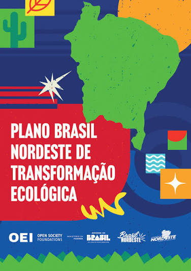

Projeto
OEI / Open Society Foundations / Consórcio Nordeste
Plano Brasil Nordeste de Transformação Ecológica
Plano regional de transformação ecológica do Consórcio Nordeste, construído para territorializar a agenda nacional de transição ecológica nos nove estados da região, com foco em justiça climática, bioeconomia, energia limpa, financiamento sustentável e desenvolvimento produtivo de baixo carbono.
Parceiros: OEI, Open Society Foundations, Consórcio Nordeste

Detalhes
- Atuação
- Mapeamento e sistematização de políticas públicas nos nove estados do Nordeste, leitura territorial, levantamento de boas práticas e apoio técnico à organização de recomendações para uma agenda regional de transformação ecológica.
- Entregas
- Entrevistas, diagnóstico territorial, relatórios técnicos, análise comparada e subsídios para uma estratégia apresentada no contexto da COP30, em diálogo com oficinas estaduais e cooperação interestadual.
- Temas
- Financiamento sustentável, adensamento tecnológico, bioeconomia, transição energética, economia circular, infraestrutura, adaptação climática e valorização dos saberes e ativos territoriais do Nordeste.